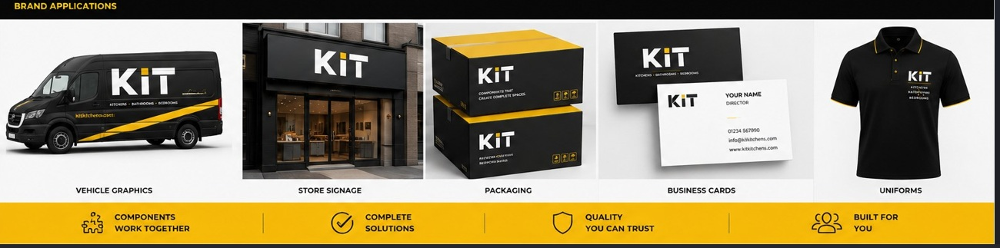

Built for growth.
Designed for every space.
A scalable retail and ecommerce brand platform for the home-improvement sector, comprising one master brand, five category brands and ten matching premium domains.
One recognisable identity.
Multiple routes to market.
A commercial platform built to expand.
KIT gives a buyer a credible route into modern home-improvement retail without having to create a new identity, category structure and digital portfolio from the ground up.
It can be launched as a focused ecommerce operation, introduced as a new division within an established bricks-and-mortar business, or used to reach a distinct customer segment under a separate but professionally developed brand.
The master identity creates recognition across the portfolio, while each category name remains direct and commercially clear. A buyer can begin with one category, add further divisions as demand develops and retain one coherent customer-facing system throughout.
The original concept, refined for commercial use.
One master identity.
Five specialist markets.
KIT is structured to support a complete home-improvement offer while allowing each category to operate with clarity and independence.
Fixed master logo. Consistent across every category and application.

Designed to work wherever customers meet the brand.
Digital commerce
Responsive ecommerce, category landing pages, campaign creative and social media.
Retail environments
Showroom signage, storefront systems, point of sale and customer documentation.
Operational assets
Fleet livery, uniforms, packaging, stationery and installation-team materials.
Five matched .com and .co.uk pairs.
KIT Kitchens
KitKitchens.comKitKitchens.co.ukKIT Bedrooms
KitBedrooms.comKitBedrooms.co.ukKIT Bathrooms
KitBathrooms.comKitBathrooms.co.ukKIT Interiors
KitInteriors.comKitInteriors.co.ukKIT Storage
KitStorage.comKitStorage.co.ukMore than domains. A coherent platform ready to deploy.
- Fixed KIT master logo and identity system
- Five category-brand treatments
- Ten confirmed .com and .co.uk domains
- Responsive acquisition website
- Retail, fleet and packaging concepts
- Uniform, stationery and marketing direction
- UK and USA acquisition supplements
- Structured transfer through independent escrow
A connected commerce brand designed to scale.
Request the regional acquisition supplement or submit a confidential expression of interest before the closing date.
info@kitkitchens.com